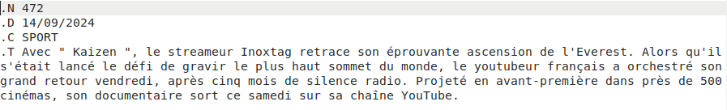

Classification automatique
L'un des premiers projet que j'ai réalisé à l'université était de créer un programme de classification automatique de dépêches aussi fiable et rapide que possible.
(Une dépêche est un court texte correspondant à une information journalistique. Chaque dépêches appartient à une catégorie tel que "sport", "science" ou "politique". )
Exemple d'une dépêche :

Ce projet s'est fait en 1 semaine. Nous l'avons fait par binôme en language java.
Nous avons dû commencer par créer un lexique à la main pour chaque catégorie répertoriant les mots liés à cette catégorie avec une valeur allant de 1 à 3, plus la valeur était élevée plus le mot appartient à la catégorie.
La première partie du projet consisté en la création automatique d'un fichier classant toutes les dépêches par leur numéro avec pour chaque dépêche sa catégorie associée d'après son lexique.
À la fin de ce fichier, il fallait mettre le pourcentage de réussite de chaque catégorie. (C'est réussi si la catégorie trouvé grâce au lexique et la vraie catégorie.)
L'objectif de la deuxième partie du projet était que les lexiques créés précédemment à la main soit maintenant crées automatiquement.
Pour cela nous avons dû pour chaque catégorie, calculer un score pour tous les mots présent dans au moins une dépêche de la catégorie.
(Ce score représentait le nombre de fois où un mot apparait dans une catégorie - le nombre de fois où ce mot apparait dans une autre catégorie.)
Si le score d'un mot était suffisamment élevée, alors nous ajoutions ce mot au lexique et nous lui attribuions une valeur entre 1 et 3 (plus le score est élevé plus sa valeur sera grande).
Au final, nous avons réussi à finir entièrement ce projet, et notre programme de classification automatique de dépêches était opérationnelle.